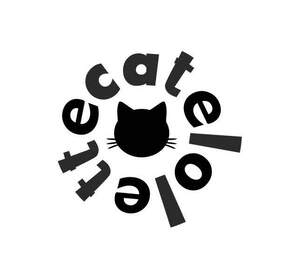

Trade Mark Journal No.2025/048 28 November 2025
UK00004294222 13 November 2025 (25,35)

International priority date claimed: 11 November 2025
(Latvia)
(019274402)
- Class 25
- Parts of clothing, footwear and headgear; Clothing; Footwear; Knitwear [clothing]; Ready-to-wear clothing; Headbands [clothing]; Headbands for clothing; Headwear; Gloves [clothing]; Gloves as clothing; Woolen clothing; Jerseys [clothing]; Jackets [clothing]; Visors [clothing]; Sneakers [footwear]; Jackets being sports clothing; Clothing for sports; Sports clothing; Leather headwear; Footwear [excluding orthopedic footwear]; Gloves for apparel; Athletic clothing; Clothing for leisure wear; Rainproof clothing; Leather clothing; Clothing of leather; Leather (Clothing of -); Men's clothing; Gabardines [clothing]; Garments for protecting clothing; Oilskins [clothing]; Wristbands [clothing]; Waterproof clothing; Muffs [clothing]; Shorts [clothing]; Knitted clothing; Embroidered clothing; Casual clothing; Bandeaux [clothing]; Denims [clothing]; Corsets [clothing, foundation garments]; Windproof clothing; Party hats [clothing]; Casual footwear; Water-resistant clothing; Veils [clothing]; Aprons [clothing]; Footwear for sport; Footwear for use in sport; Footwear for sports; Sports footwear; Cashmere clothing; Furs [clothing]; Weatherproof clothing; Footwear for snowboarding; Golf clothing, other than gloves; Playsuits [clothing]; Collars [clothing]; Capes (clothing); Footwear for women; Insoles for footwear; Wooden shoes [footwear]; Belts [clothing]; Belts for clothing; Clothing layettes; Athletic footwear; Footwear for men; Mitts [clothing]; Clothing for cycling; Kerchiefs [clothing]; Layettes [clothing]; Leisure clothing; Chaps (clothing); Maternity clothing; Flip-flops for use as footwear; Shoes for leisurewear; Hoods [clothing]; Leisure footwear; Sports clothing [other than golf gloves]; Dance clothing; Boas [clothing]; Triathlon clothing; Linen clothing; Paper hats for use as clothing items; Latex clothing; Fashion hats; Hats (Paper -) [clothing]; Paper hats [clothing]; Braces for clothing; Woven clothing; Mufflers [clothing]; Clothing for gymnastics; Bonnets [headwear]; Jackets (Stuff -) [clothing]; Stuff jackets [clothing]; Ready-made clothing; Tops [clothing].
- Class 35
- Sales promotions at point of purchase or sale, for others; Retail services connected with the sale of clothing and clothing accessories; Wholesale services in relation to baked goods; Promotion of goods and services for others; Wholesale services relating to sporting goods; Providing online marketplaces for sellers of goods and or services; Wholesale services relating to clothing; Wholesale services in relation to clothing; Wholesale services in relation to bags; Wholesale services in relation to footwear; Wholesale services relating to fake furs; Wholesale services in relation to sewing articles; Online retail services relating to handbags; Retail services relating to clothing; Online retail services relating to clothing; Retail services in relation to bags.
Tatiana Semenova
Representative: Victoria TSYKALO